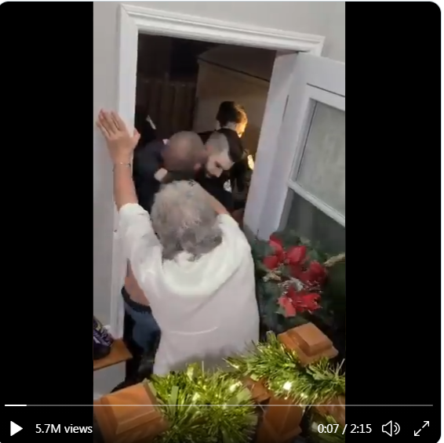
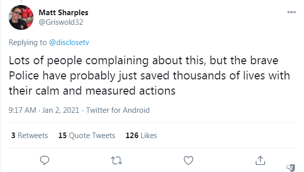

COVID: Police Storm Peasants in Gatineau, QC
January 7th, 2021
Another story from early January, but I couldn't cover it then because of the horrible Graphics Card Explosion of 2021.
From the replies. Not a photoshop.
If you are a bigot you'll see a bunch of cops who need to be made examples of.
 I wasn't sure the tweet would imbed properly, so here's a screenshot I took of the video. What you will see, if you are not a bigot, is a pack of 20 heroic Pension Seekers in Blue aggressively dragging a team of 6 Quebec Neo-Nazi's out of their own house for breaking arcane and capricious Covidtastrophism Lockdown rules. They had a grand total of 6 people on the premises. Basically super spreaders. NEW - Canadian police stormed an "illegal gathering of six people" in a Gatineau home after a neighbor ratted them out. The residents resisted.pic.twitter.com/Bl5tJmMOIN
— Disclose.tv 🚨 (@disclosetv) January 2, 2021